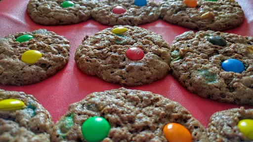

Smartie oat cookies

Servings: 24
Total: 15 mins
Ingredients
- 125 g softened butter
- 210 g soft brown sugar
- 1 tsp vanilla extract
- 1 egg
- 170 g self raising flour
- 150 g smarties
- ½ mug oats
- 1 tbsp cocoa
- Smarties to decorate
Instructions
- Preheat the oven to 180°C/Gas 6. Grease 2 baking trays.
- Beat the
butter125 g
and sugar210 g
together. Add the vanilla extract1 tsp
and egg1
and beat well.
- Add the
flour170 g
, smarties150 g
, oats½ mug
and cocoa1 tbsp
. Mix to a stiff dough.
- Roll into a 30 cm 'sausage' and cut into about 34 cookies. Place on the baking trays. Leave space between them as they spread out. Press a few
smarties150 g
in each to decorate.
- Place in the oven for 15 minutes. The cookies should be crisp on the outside and a little chewy on the inside.
Nosh: Quick & Easy
Short Link
Long Link